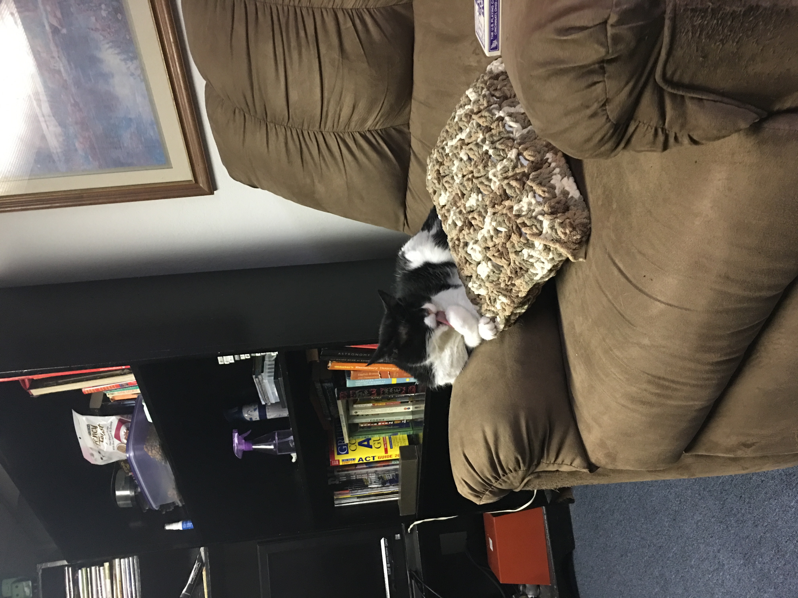

Good I'm Richard Beck, and it is currently I'm a high school student in the STL metro area. Ever since I was old enough to hold a bottle, I've always had this deep connection with computers. Everything about it excites and amazes me. It's a completely different world, and it's because of this that I have such an extreme passion for writing code. Being able to create a webpage is like being an artist but for computers. But instead of beautiful works such as the Mona Lisa, or The Starry Night. We have Facebook, and Microsoft. In a way, I believe both of these companies have both inspired the same ideas and emotions one felt when looking at the works of Leonardo Divinci or Vincent Van Gogh. When I am old enough I plan to apply and attend Hackreactor, a 12 week long web-developer training camp that teaches you everything about front-end web development. With an emphasis on a powerful programming language called, JavaScript. The benefits of going to HackReactor can be seen here. After I go here, the goal is to attain a job working in Silicon Valley and also attend the University of California in Berkley. Where I would like to double major in Computer Science and Cyber Security.
As of right now, my portfolio isn't really that big. Although, I can say that I have completed all of the HTML, CSS, and Javascript courses on Team TreeHouse, Codeacademy and almost all of the Javascript courses on Codeschool. In addition to this, I am currently reading and trudging through the book, Eloquent Javascript and to fill the rest of the space here is a picture of my cat!
